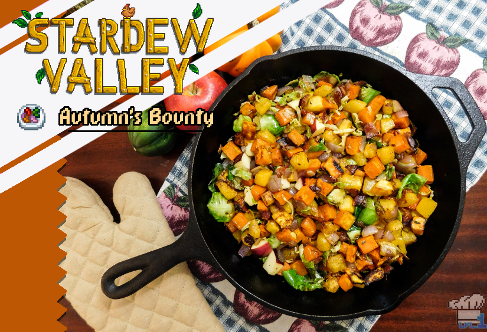
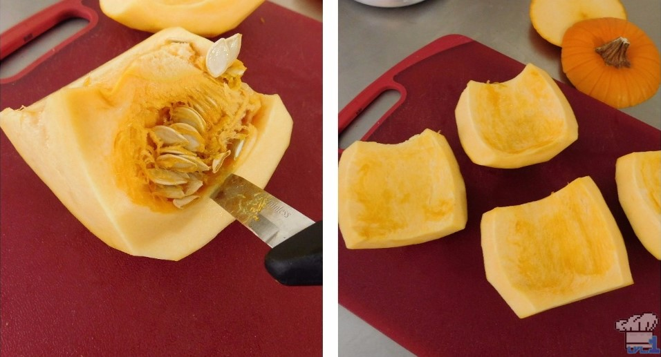
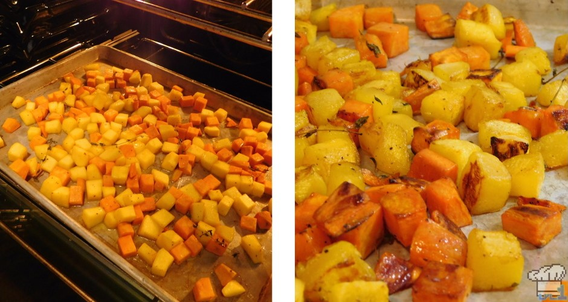
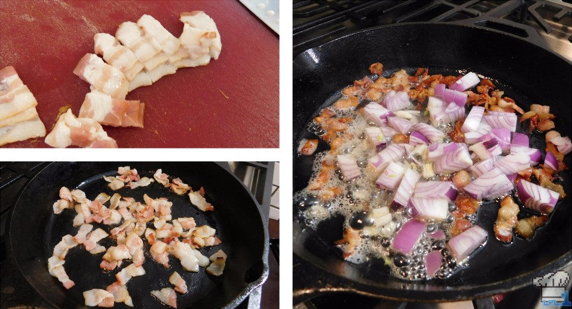
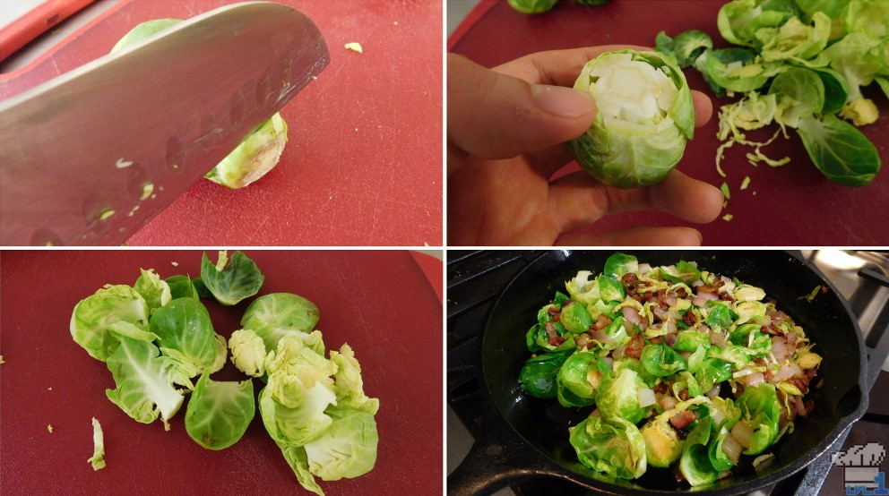
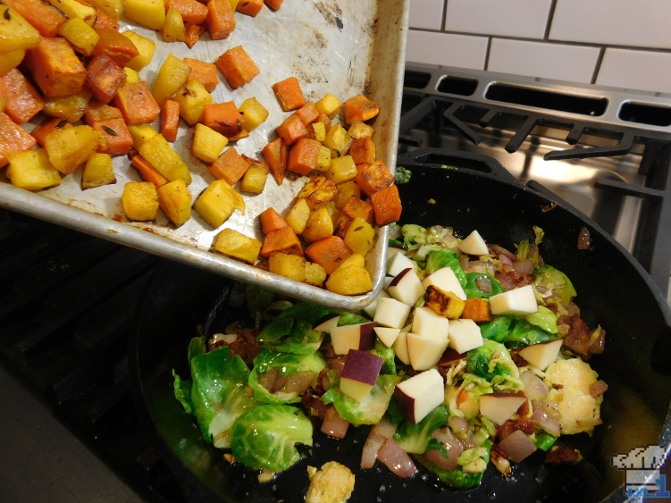

Autumn's Bounty
Makes about 6 servings.

Ingredients
- 1 small pumpkin (around 2 lbs)
- 1 medium sweet potato (about 1 lb.)
- 1 Tbsp vegetable oil
- 1 Tbsp honey
- 7 sprigs thyme
- 1½ tsp salt
- Pepper to taste
- 3 strips bacon
- 1 small red onion
- 2 cloves garlic
- 5 to 7 Brussels sprouts
- 1 red-skinned apple (Gala)
Equipment
- Sharp knife and cutting board
- Large mixing bowl
- Baking sheet
- Wooden spoon or heat-proof spatula
- Large fry pan
Directions
- Preheat the oven to 375F.
-
If you've never cooked with an actual pumpkin before, now's the perfect time to learn! Start by peeling the
skin off either with a vegetable peeler, or what I find much easier, just a sharp knife; it's kind of like
peeling a melon. Use a sharp knife to cut off the top and bottom of the pumpkin and then cut it into
quarters. Remove the seeds with a spoon or small knife and reserve them if you feel like making pumpkin
seeds; if not, simply discard them.

-
Cut up the pumpkin into medium dice. Peel and chop the sweet potato similarly and toss the vegetables in a
mixing bowl along with the oil, honey, salt, pepper, and thyme sprigs. Spread the mixture on an un-greased
baking sheet and place it in the oven for 20-25 minutes. Pop the oven open about every 5 minutes during this
cook time to give the pan a stir and avoid burning. Once the veggies are soft and begin to color, remove the
pan from the oven and set it aside (oh, and remove those thyme sprigs!).

-
Slice the three strips of bacon into small strips and throw them in a fry pan over medium heat to render.
While the bacon is cooking, chop up your red onion and garlic and add them to the pan once there's a good
amount of fat present, about two minutes.

-
While the onions and garlic cook, you can prepare the Brussels sprouts. Trim the base and remove the outer
leaves. Slice the sprouts thinly if preferred. Once the onions have softened up a bit, throw in the Brussels
sprouts and toss to combine.

-
Cook the Brussels sprouts with the rest of the ingredients for a minute or two before finally adding the
roasted pumpkin and sweet potato back into the pan. Chop up a red-skinned apple (I used Gala) and add it to
the pan at this time as well. Toss everything in the pan for two more minutes over medium heat until
everything is heated through and combined.
